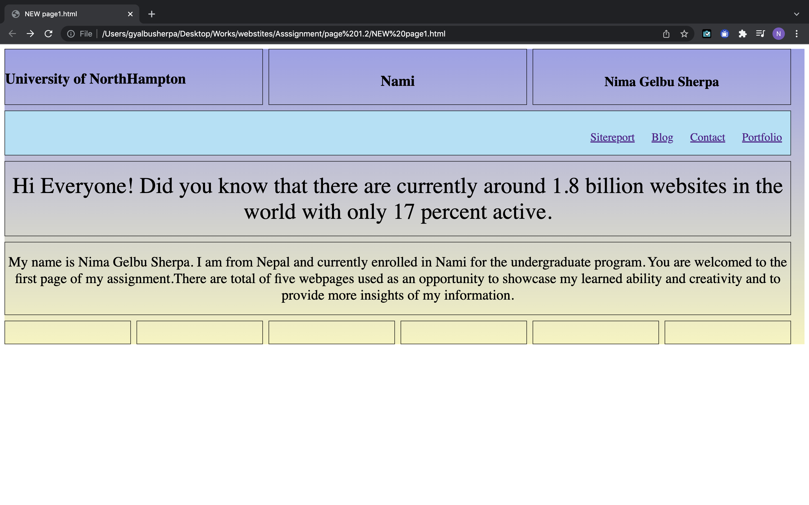

University of NorthHampton
Nami
Nima Gelbu Sherpa
Starting The Journey
I have a good understanding of the code and its functions which made my earlier stage of this assignment straightforward. But with progress, I consider the designing part as the most difficult. The correct font, the use of colors, and the placements of the grid took much more time than any other activity. Nonetheless, the beginning period made me curious to learn more, and also brought out a sense of joy when completing a minor activity or when debugging minor issues.

Flow
The decision of new design and colors for the entries on the portfolio page was still confusing and tiring. However, with the finalization of the webpage format, the remaining part became effortless. I made the changes to the grid according to the required design. With practice and focus, the placement of the code went with the flow even with less effort.
Familiar
After finishing two of the webpages, the methods became understandable and easier to use. The use of the same code multiple times across the webpages provided me with more familiarity with it.
"Consistency is greater than Intensity"